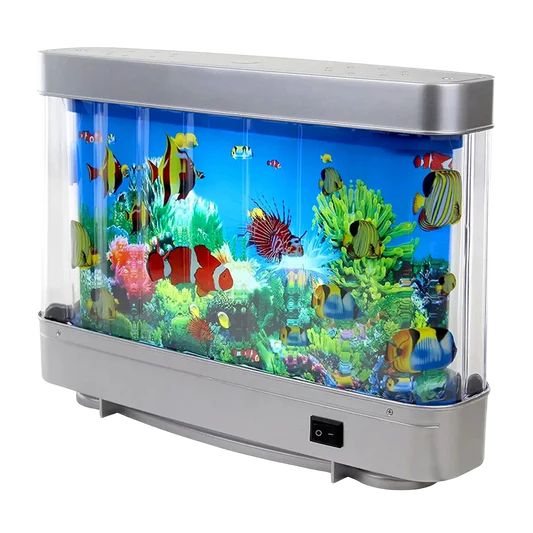
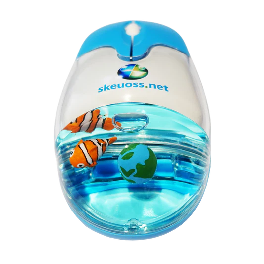
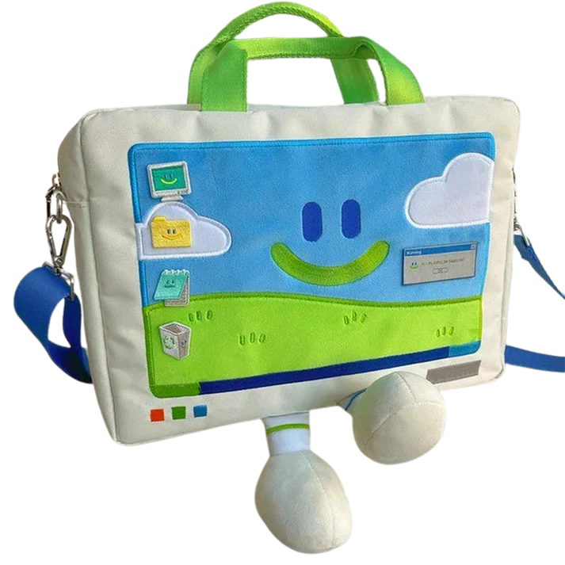
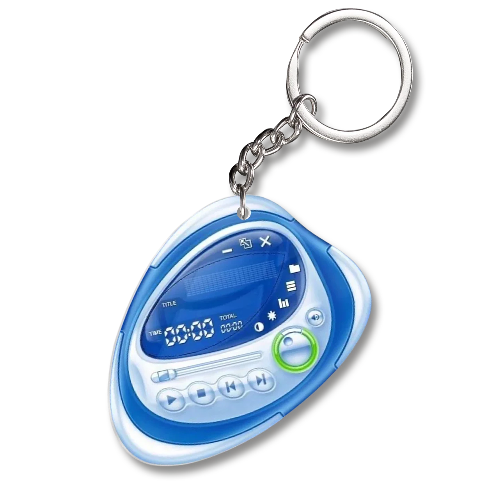

Bienvenido!
Bienvenido a Frutiger Dreams, un espacio nostálgico donde los 2000 vuelven a brillar con un aire futurista y optimista. Esta página está inspirada en el estilo Frutiger Aero —esa mezcla entre lo tecnológico, lo limpio y lo lleno de vida—, y reúne información, inspiración, productos y reseñas sobre todo lo que revive esta estética tan icónica. Frutiger Dreams es un lugar donde el cielo se vuelve brillante, el aire se siente azul y el futuro parece amable otra vez. 🍏💿💧
¿Qué es el Frutiger Aero
Frutiger Aero es una estética visual que dominó gran parte del diseño digital entre los años 2000 y 2010, antes de la llegada del minimalismo plano y los colores neutros. Se caracteriza por su optimismo futurista, sus texturas brillantes y su amor por lo digital y lo natural al mismo tiempo. En el mundo Frutiger Aero, la tecnología y la naturaleza conviven en armonía: cielos celestes, burbujas, gotas de agua, globos terráqueos, hojas verdes, reflejos metálicos, transparencias, brillos y degradados suaves.
Era la época de Windows XP, los celulares con pantallas curvas, los logos con reflejos 3D, y los fondos que parecían un día de verano perfecto. El nombre proviene de la combinación de dos elementos clave de ese período: Frutiger, una tipografía muy usada en interfaces y marcas tecnológicas de la época. Aero, el lenguaje visual de Microsoft Windows Vista, que representaba esa estética brillante y transparente.
Productos
Lampara Pecera Artificial
$68,90
Mouse Frutiger Style
$18,90
Bolso Frutiger
$50,90
Llavero
$2,80